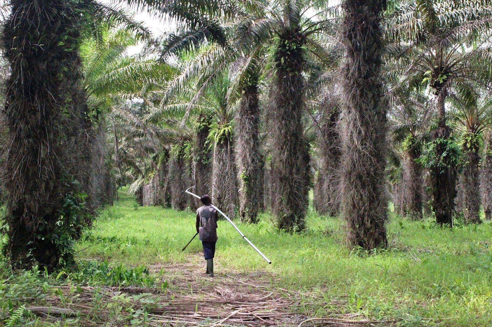
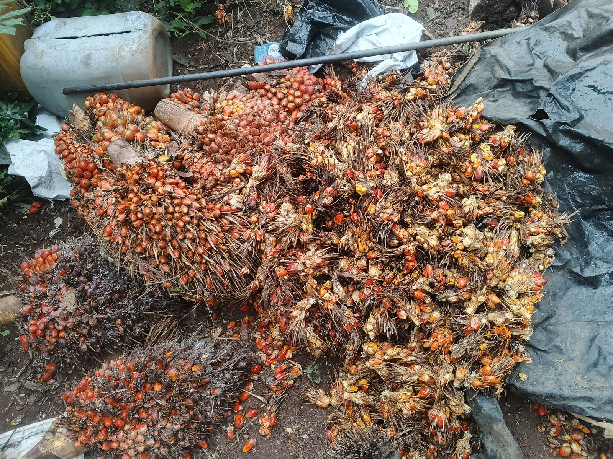

Promotionnelle · 3 min 22 · voix masculine
Maîtrisez vos rejets
Code de l'environnement de 2023, acheteurs exigeants : rejets, déchets et urgences maîtrisés et prouvés.
GEC-CI vous aide à construire un système ISO 14001 simple et vivant : vous connaissez vos impacts, vous respectez la loi ivoirienne, vous réduisez déchets, eau et énergie, et vous arrivez à l'audit avec des preuves réelles. La décision de certification appartient à l'organisme certificateur accrédité.
Aspects et impacts, obligations de conformité, déchets, effluents, énergie, urgences et performance environnementale. Nous vendons un système qui fonctionne et se prouve, pas une promesse de date.

Chaque activité est analysée en situation normale, anormale et d'urgence, puis cotée avec une grille stable ; un aspect encadré par une obligation de conformité ou ayant fait l'objet d'une plainte est significatif d'office.
La norme exige de connaître ses obligations et de vérifier périodiquement qu'on les respecte. En Côte d'Ivoire, le nouveau Code de l'environnement (loi n° 2023-900) rend ce travail indispensable.
Effluents, fumées, déchets dangereux, carburants : chaque flux a une consigne, un responsable, une mesure et une preuve.
Déversement d'hydrocarbure, incendie avec eaux d'extinction, débordement de lagune : on prépare, on exerce, on corrige.
L'édition 2026 insiste sur l'amont (plantations, intrants, fournisseurs) et l'aval (transport, emballages, fin de vie) que l'entreprise influence.
Climat (chaleur, inondations, sécheresse), biodiversité, pollution et ressources en eau entrent dans l'analyse du contexte depuis 2024 et plus encore en 2026.
La norme s'adapte à la taille. Une PME de 30 personnes peut avoir un système léger de quelques procédures et registres, piloté sur la plateforme.
Le suivi de l'eau, de l'énergie et des déchets révèle souvent des pertes évitables ; la conformité évite fermetures et sanctions. Les gains se mesurent avec vos propres compteurs.
Ces référentiels couvrent surtout la production agricole. ISO 14001 couvre l'usine, le magasin, le transport et le système de management. Les preuves communes sont réutilisées.
C'est justement le premier chantier. On identifie les écarts, on engage les démarches auprès de l'ANDE ou du CIAPOL ; on ne cache rien à l'auditeur.
ISO 14001:2026 est publiée. Construire directement selon 2026 évite une double transition ; la période de transition laisse le temps mais pas de raison d'attendre.
GEC-CI forme un responsable environnement interne et l'outille. Il faut du temps réservé : c'est un coût réel, à prévoir dès le départ.
Voix off française, musique, texte affiché à l'écran : à partager avec votre conseil d'administration et vos équipes. Toutes les vidéos GEC-CI PRO
Code de l'environnement de 2023, acheteurs exigeants : rejets, déchets et urgences maîtrisés et prouvés.
La cotation des aspects avec une huilerie de palme, les aspects significatifs d'office et les nouveautés 2026.
La différence sur le terrain, la complémentarité avec Rainforest Alliance et le système QSE.
Dix étapes avec un responsable environnement à San Pedro, la plateforme et le paiement à l'avancement.

Une inspection relève des rejets non traités ou un dossier d'autorisation incomplet, et l'activité est menacée.
L'acheteur européen demande des preuves environnementales et de chaîne de valeur que l'entreprise ne sait pas fournir.
Factures d'électricité, de gasoil et d'eau qui montent sans que personne ne sache où part la ressource.
Odeurs, fumées ou eaux noires vers la lagune créent plaintes, tensions et risque d'image.
La même méthode que pour nos filières agricoles ; seul le référentiel change. La décision de certifier appartient à l'organisme certificateur accrédité.
Numérotation ISO 14001:2015 + Amd 1:2024 (encore valable pendant la transition), avec renvois vers ISO 14001:2026 publiée le 15 avril 2026. Les numéros propres à l'édition 2026 non vérifiés sur le texte officiel portent "confirmer": true.
Reformulation GEC-CI. Le texte officiel de la norme, acheté auprès de l'ISO ou de CODINORM, fait foi. Risque : niveau d'écart le plus fréquent en Côte d'Ivoire, selon GEC-CI. 5 article(s) portent la mention « À CONFIRMER AUPRÈS DE L'ORGANISME COMPÉTENT AVANT MISE EN ŒUVRE OU AUDIT ».
Répondez honnêtement : rien n'est enregistré ni envoyé. Le résultat donne vos priorités ; il ne remplace pas le diagnostic sur place.

Effluents de lavage, chaudière, coques et emballages : beaucoup d'aspects, forte pression des acheteurs.

Les lagunes de traitement et les odeurs sont le premier risque légal et de voisinage.

Carburant, huiles usagées, pneus, lavage des camions : impacts dispersés mais réels.

Stockage de produits phytosanitaires, emballages vides, sacs et camions : la coopérative peut bâtir sur ses acquis RA ou Fairtrade.

L'entreprise veut un système intégré QSE sans doubler les documents.
Personnages : illustrations créées pour GEC-CI, ils ne représentent pas des personnes réelles.
Facture normalisée électronique pour chaque étape, sur procès-verbal de livraison. Le prix se calcule après le diagnostic, lot par lot. Aucun paiement n'est conditionné à l'obtention du certificat : l'organisme certificateur accrédité décide seul.
Vos données restent à vous : elles sont hébergées dans votre espace et vous sont restituées en fin de contrat.
33 articles, preuves codées, registres, analyse d'écarts, indicateurs, manuel intégré et passerelle IA GECI ; base de données en ligne sécurisée.
Ouvrir la plateformeManuel opérationnel : procédures, registres codifiés, check-lists et points à confirmer. Intégré à la plateforme, aussi en PDF ci-dessous.
Lire dans la plateformeSensibilisation des dirigeants, formation du responsable du système, auditeurs internes et personnel de terrain.
Demander une sessionLe système de gestion du cabinet : clients, contrats, missions, preuves, validations humaines, incidents, facturation et journal d'audit. Un seul compte pour toutes les plateformes GEC-CI ; droits vérifiés par le serveur.
Ouvrir IA GECI
GEC-CI est dirigé par Mr SIDIBE ABDOULAYE, Président-Directeur Général, ATN RA et formateur-auditeur ISO 9001, 14001 et 45001. La direction suit chaque mission jusqu'à la décision écrite.


Portraits de bureau : décors mis en scène numériquement.
| Premier contact | Réponse le jour même, rendez-vous sous 7 jours |
| Diagnostic | Rapport sous 10 jours ouvrés après la visite |
| Vos questions | Réponse sous 48 heures ouvrées |
| Comité de pilotage | Chaque mois, compte rendu sous 5 jours ouvrés |
| Données transmises | Retour écrit sous 5 jours ouvrés |
| Audit blanc | Rapport sous 7 jours ouvrés |
Avec les 33 articles de la norme. Vous repartez avec vos trois priorités.
+225 05 55 49 45 94WhatsApp+225 07 57 88 13 49